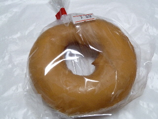
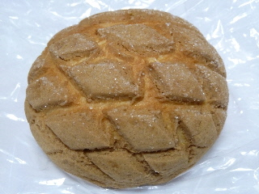
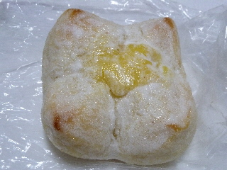
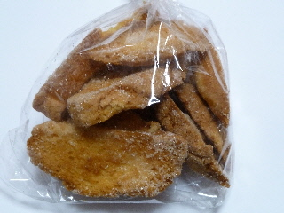

トライアル出雲店のピーナッツチョコドーナッツ
2011/02/21
ドーナッツ100円！なんてよく聞きますが、ここのは69円です。
安いですね。ドーナッツはこれくらいの値段のほうがいいな。

ピーナッツチョコなのでとっても甘そうですが、ドーナッツ生地はとってもあっさり味だったので、軽かったです。
サティー出雲店、ジャスコパラオ店があった所です。
2011/02/21
ドーナッツ100円！なんてよく聞きますが、ここのは69円です。
安いですね。ドーナッツはこれくらいの値段のほうがいいな。

ピーナッツチョコなのでとっても甘そうですが、ドーナッツ生地はとってもあっさり味だったので、軽かったです。
2011/11/25
クッキー多目で、表面が固いメイプルメロンパンです。

メイプル味で甘いクッキー部分が沢山あるので甘くて美味しかったです。
中にあるキメの細かいパンの触感もいいなーって思いながら食べました。
これいい商品ですね。
2011/08/11
白い粉が沢山掛かった牛乳パンです。

白い粉は甘かったです。
北海道の名産でバター飴ってありますよね。それの粉がパンに掛かってるような感じがしました。
こなが溶けてて触りにくかったですが、面白い商品なのでアリかなと思いました。
2011/05/12
トライアル出雲店のラスクです。新商品って書いて置いてありました。

メロンパンをこんがり焼いて、砂糖がまぶしてありますね。
メロンパン自体にクッキー生地があるので、クッキーのようなラスクになっていました。
120円と安かったです。
2011/03/24
朝トライアルに行ったら、パンコーナーに行列が出来ていました。
何故？って思って見ていたら、食パンの販売が始まりました。
食パンの販売で人が並ぶって、人気あるんですね。
大きな食パンをトライアルのビニール袋に入れて、買い物されていました。
見ててアツアツ感は解らなかったですが、きっと出来たてのパンなんでしょうね。
近くのパン屋
ラピタ本店